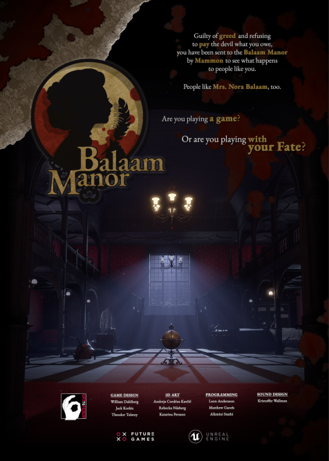

Our third project lasted for 5 weeks a the theme were to make a puzzle game with religious undertone.
We were to take Inspiration from the famous painting "Garden of Earthly Delights".
OUr group consisted of 9 people. 3 Designers, 3 programmers and 3 3D Artists
Our programmers were: Matthew Garcés, Alkimini Stathi, Leon Andersson.
Our 3D artists: Rebcka Näsberg, , Andreja Cordeus Kavic, Katarina Persson.
Our Desingers: William Dahlberg, Jack Korkis, Theodor Tolstoy.
Our sound developers: Kristoffer Wallman .

We used blueprints in this project aswell due to a lack of experience. IF we had decided to go with C++ code instead of blueprints, we wouldn't be able to add as much as we did during those 5 weeks.
I got the task to work with Interface in this project, which I had never done before, but I quite enjoyed it and felt my effort was worthwhile.
Since I do not have any code to show.
What I did in the game was to have a Outline on interactable objects aswell as having a little box infront of you when hovering over an interacble object,
telling you how to pick it up, and when in hand how to inspect, zoom and rotate the object.
Were going to add pictures to my portfolio, but the scaling of the pictures is messing up the entire portfolio.